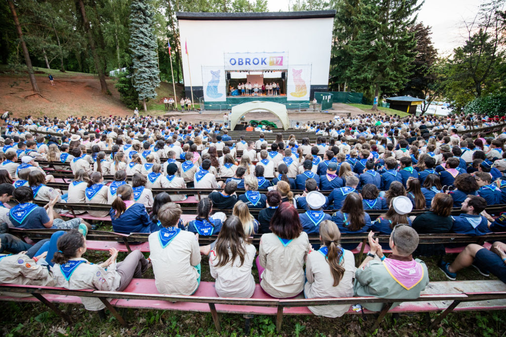
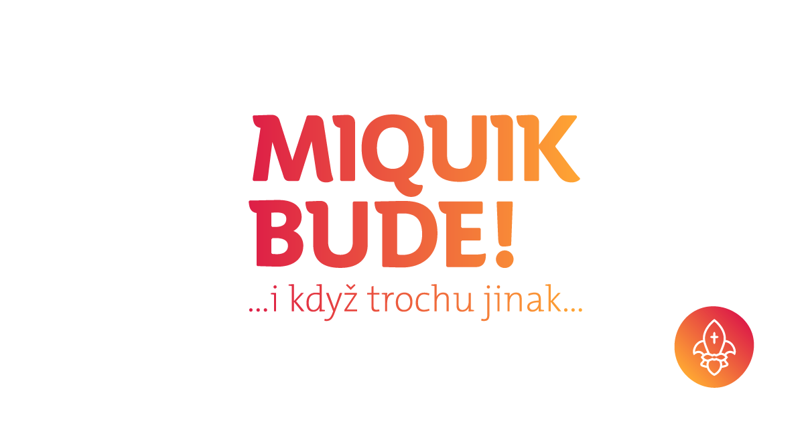
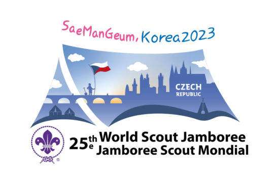

Skautské akce a projekty
Obrok, Skautské setkání 
První Obrok se konal v roce 2000 a přihlásilo se téměř 600 účastníků. Už tehdy se stal velkým fenoménem a největší celostátní skautskou akcí v České republice. Poslední Obrok se konal v roce 2019 a zúčastnilo se ho přes 2000 skautů a skautek
Mikulášský víkend 
Mikulášský víkend, zkráceně také MiQuik, je jednou z největších celostátních roverských akcí. Tradičně se koná začátkem prosince na různých zajímavých místech v Praze. Nabízí prostor pro oprášení dávných skautských přátelství či navázání nových, ale také pro seberozvoj a uspokojení vlastní kulturní, intelektuální, společenské či gastronomické touhy.
Jamboree 
Světové skautské Jamboree neboli World Scout Jamboree je největší akce pořádaná Skautskou organizací pro lidi z celého světa, které se koná každé 4 roky v jiné zemi světa. Hlavní myšlenkou setkání je poznávání kultur a podpora míru a porozumění.